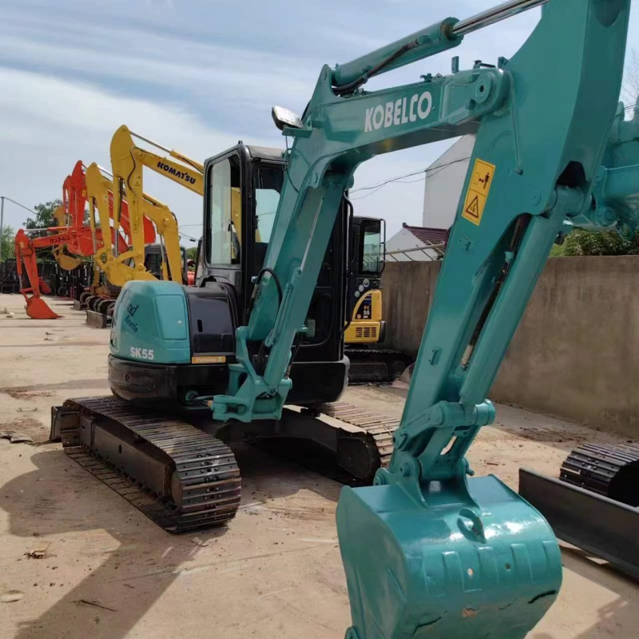

Refurbished Kobelco SK55 Excavator
The Kobelco SK55 is a versatile, compact, and highly efficient hydraulic excavator that has earned a reputation for performance and reliability. Renowned for its ability to work in tight spaces, the SK55 excels in urban construction projects, landscaping, and other tasks that require precision and agility. When you choose a refurbished Kobelco SK55, you’re opting for a cost-effective solution that doesn't compromise on quality or functionality.
Honestly, it's almost impossible to buy a brand new excavator from China. They either don't exist or are made in China. If a Chinese seller tells you their Caterpillar/Komatsu/Volvo/Kobelco/Hitachi is brand new, they're lying. Therefore, a refurbished excavator is your best bet.

Here are the detailed specifications for a refurbished Kobelco SK55SRX-6 excavator:
Operating Weight and Dimensions
- Operating Weight: 5,300–5,500 kg
- Overall Length: ~5.5–5.7 meters
- Overall Width: ~1.96–2.0 meters
- Overall Height: ~2.55–2.65 meters
- Tail Swing Radius: ~1.5 meters (true short-radius design)
- Ground Clearance: ~350–370 mm
- Track Width: 400 mm standard
Engine and Powertrain
- Engine Model: Yanmar 4TNV88
- Rated Power Output: ~29.1 kW (39 hp) @ 2,400 rpm
- Maximum Torque: ~160–180 Nm
- Fuel Tank Capacity: ~70–80 liters
- Travel Speed: 2.8–4.8 km/h
- Swing Speed: ~9.5–10 rpm
- Gradeability: Up to 30°
Hydraulic System
- Main Pump Type: Variable displacement axial piston pump
- Flow Rate: ~2 × 85–95 L/min
- System Pressure: Up to 24.5 MPa
- Hydraulic Oil Capacity: ~100–120 liters
- Boom Cylinder Bore: ~90 mm
- Arm Cylinder Bore: ~75 mm
- Bucket Cylinder Bore: ~65 mm
Performance Metrics
- Bucket Capacity: 0.18–0.22 m³
- Max Digging Depth: ~3.8–4.0 meters
- Max Reach (Horizontal): ~6.3–6.5 meters
- Max Dump Height: ~4.2–4.4 meters
- Bucket Digging Force: ~42–45 kN
- Arm Digging Force: ~28–30 kN
Cab and Operator Features
- Cab Type: ROPS/FOPS certified
- Display: LCD monitor with diagnostics and fuel tracking
- Controls: Pilot joystick controls with adjustable sensitivity
- Comfort: Optional air-conditioning, adjustable suspension seat
- Visibility: Wide glass area, optional rear-view camera
Smart Features and Efficiency
- Auto Idle & Eco Mode: Reduces fuel consumption during low-load operations
- Integrated Noise Reduction: Engine and hydraulic tuning for quiet operation
- Telematics Ready: KOMEXS system support in newer refurbished units
- Centralized Lubrication: Optional for reduced maintenance
Attachments Compatibility
- Standard Bucket: 0.18–0.22 m³
- Optional Tools: Hydraulic breaker, compactor, grapple, ripper
- Quick Coupler: Hydraulic or manual options available
Refurbishment Scope
Refurbished SK55 units typically include:
- Engine overhaul (injectors, turbo, seals)
- Hydraulic pump recalibration or replacement
- Electrical system rewiring and sensor testing
- Cab restoration (seat, controls, HVAC, monitor)
- Structural repairs (boom welding, bushing replacement, repainting)
Overview of the Kobelco SK55 Excavator
The Kobelco SK55 is a 5.5-ton mini excavator designed for high productivity in confined spaces. Despite its compact size, the SK55 boasts impressive power and versatility, making it suitable for a wide range of applications, from digging and trenching to lifting and demolition. With its reduced operating weight, it can be transported easily, making it a go-to machine for contractors who need to move the equipment frequently.
Key Specifications of the Kobelco SK55 Excavator
-
Operating Weight: 5,500 kg (12,125 lbs)
-
Engine Power: 39.7 kW (53.2 horsepower)
-
Max Digging Depth: 4.4 meters (14.4 feet)
-
Max Reach: 6.4 meters (21 feet)
-
Bucket Capacity: 0.18 to 0.25 cubic meters, depending on the configuration
-
Travel Speed: 5.0 km/h (3.1 mph)
These specifications make the Kobelco SK55 ideal for medium-duty tasks while being light enough to work in urban areas or confined spaces.
Key Features of the Kobelco SK55 Excavator
Efficient and Powerful Engine
The Kobelco SK55 is powered by a high-performance engine that provides 53.2 horsepower, offering plenty of muscle for digging, lifting, and moving materials. The engine is designed for both power and fuel efficiency, which allows for longer working hours with less fuel consumption.
-
Engine Efficiency: The SK55 features an energy-efficient engine designed to reduce fuel consumption while maintaining a high level of power and performance.
-
Eco Mode: The eco mode feature adjusts engine power to the task, offering operators a way to reduce fuel consumption during less demanding jobs.
Hydraulic System for Increased Productivity
The Kobelco SK55 comes equipped with an advanced hydraulic system that provides smooth and powerful operation. The machine’s hydraulics are built for precise and efficient digging and lifting, making it an ideal tool for contractors requiring exact results in short time frames.
-
Load-Sensing Hydraulics: The machine automatically adjusts hydraulic pressure according to the workload, ensuring the most efficient use of fuel.
-
Powerful Boom and Arm: With an optimized boom and arm design, the SK55 offers fast and powerful lifting and digging capabilities, reducing cycle times for improved overall productivity.
Compact and Maneuverable Design
One of the defining features of the Kobelco SK55 is its compact design. With a width of approximately 2.0 meters (6.6 feet) and an overall length of 5.6 meters (18.4 feet), the SK55 can easily maneuver through tight spaces, making it ideal for urban construction and residential landscaping jobs.
-
Compact Tail Swing: The compact tail swing design allows the machine to rotate within a smaller radius, making it perfect for working in narrow environments or close to buildings or other structures.
-
Narrow Tracks: The narrow tracks allow the SK55 to work in tight spaces while offering stability and balance.
Operator-Friendly Cabin
The cabin of the Kobelco SK55 is designed for comfort and convenience. It provides a spacious, ergonomic environment that reduces operator fatigue and enhances productivity, especially during long work shifts.
-
Visibility: The cabin features large windows and minimized blind spots, ensuring excellent visibility of the work area. This is essential for tasks like trenching and material handling.
-
Comfortable Seat: The operator's seat is fully adjustable and designed to provide maximum comfort throughout the day.
-
Intuitive Controls: The SK55 comes with easy-to-use controls, ensuring that operators can perform various tasks with precision.
Durable Underbody and Robust Structure
The Kobelco SK55 is built with durability in mind. Its undercarriage is designed to withstand the rigors of tough construction sites, while the overall frame is robust enough to handle harsh conditions.
-
Reinforced Undercarriage: The undercarriage is reinforced to reduce wear and ensure stability during operations on rough or uneven ground.
-
Long-Lasting Components: The SK55 is built with high-quality materials that increase its longevity, making it an ideal investment for businesses looking for reliable performance over time.
Advantages of Buying a Refurbished Kobelco SK55 Excavator
Significant Cost Savings
One of the most obvious advantages of buying a refurbished Kobelco SK55 is the cost savings. Refurbished machines are typically 30-40% less expensive than new models, offering contractors the opportunity to get a high-quality machine at a fraction of the price.
-
Lower Initial Investment: The cost savings from a refurbished unit can be allocated to other areas, such as purchasing additional attachments or upgrading other equipment in your fleet.
-
Value for Money: A refurbished SK55 offers the same level of performance as a new machine but at a significantly reduced price point.
Certified Refurbishment Process
When purchasing a refurbished Kobelco SK55, it’s important to ensure that the machine has undergone a thorough refurbishment process. This process includes a full inspection, repair, and restoration to bring the machine up to the manufacturer’s standards. Key aspects of the refurbishment typically include:
-
Engine Overhaul: The engine is inspected for wear, and any worn parts are replaced, ensuring it runs like new.
-
Hydraulic System Restoration: The hydraulic components are inspected, repaired, and tested to ensure they function as efficiently as new.
-
Undercarriage and Track Inspection: The undercarriage is checked for wear, and any necessary repairs or replacements are made.
-
Cosmetic Restoration: The machine is repainted, cleaned, and restored to improve its aesthetic appearance.
A quality refurbishment ensures that the Kobelco SK55 delivers dependable performance for many more years.
Environmental Benefits
Choosing a refurbished machine instead of a new one helps reduce the overall environmental impact. Refurbishing an excavator reduces the need for new raw materials and manufacturing processes, thereby lowering emissions and energy consumption.
-
Recycling and Reusing: The refurbishment process contributes to a more sustainable cycle by reusing parts and components where possible.
Maintenance Tips for the Kobelco SK55 Excavator
To keep your Kobelco SK55 in optimal condition, regular maintenance is essential. Here are a few tips to ensure the longevity and efficient performance of your machine:
Engine and Hydraulic Maintenance
-
Change the oil at recommended intervals to maintain engine efficiency.
-
Inspect hydraulic fluid levels regularly and replace filters as needed to avoid contamination.
-
Check and clean air filters to prevent dust and debris from entering the engine.
Undercarriage and Tracks
-
Regularly inspect the tracks, rollers, and idlers for signs of wear and replace components as needed.
-
Keep the undercarriage clean to avoid buildup that could affect performance.
-
Lubricate the track tensioning system to maintain proper tension and ensure even wear.
Cabin and Comfort Systems
-
Clean the cabin regularly and check that all controls and instruments are functioning correctly.
-
Ensure the air conditioning and heating systems are working properly to maintain operator comfort.
Conclusion
The Kobelco SK55 is a robust and versatile excavator that’s perfect for a wide variety of applications, particularly in confined spaces. Its compact size, powerful engine, and advanced hydraulic system make it a top choice for urban construction, landscaping, and other similar projects. Opting for a refurbished Kobelco SK55 gives you access to this powerful machine at a significantly lower price, providing excellent value for money.
By choosing a refurbished unit, you can expect a fully restored and certified excavator that offers the same high-level performance as a new one. With regular maintenance and care, a refurbished Kobelco SK55 can continue to deliver reliable service for years to come, making it a smart investment for any construction business.
Our Commitment
- 2 years / 4000 hours warranty.
- EPA certified.
- No sweatshop labor.
Contacts

- [email protected]
- Youtube Instagram Facebook
- Navigation: G206 (Sishu Bridge) in Changfeng County, Hefei City, Anhui Province, 200 meters north to the east